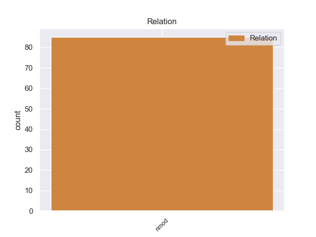
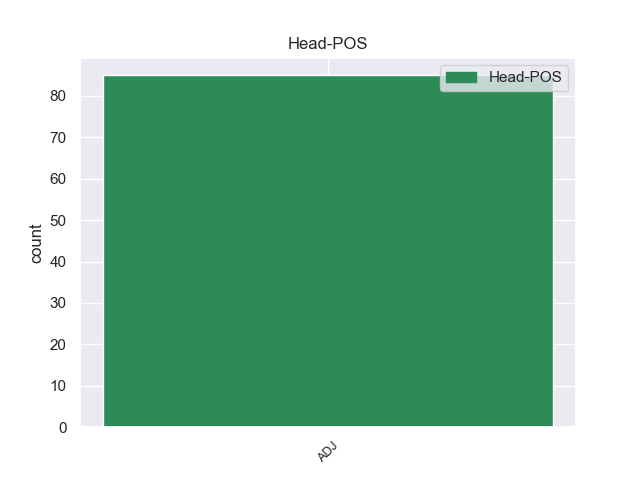
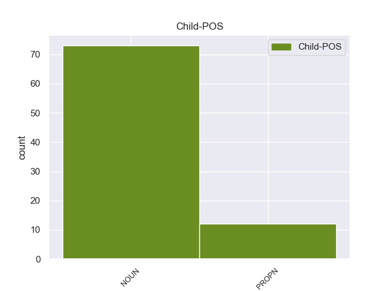

Distribution of features within this leaf



Morphosyntax Rules sorted by frequency.
- When the dependent token is the nominal modifier(nmod) of the head token, and the head token is ADJ and the dependent token is NOUN, the Case needs to be Acc.
1 Όμως _ _ _ _ 0 _ _ _
2 , _ _ _ _ 0 _ _ _
3 ο _ _ _ _ 0 _ _ _
4 Υπουργός _ _ _ _ 0 _ _ _
5 Δικαιοσύνης _ _ _ _ 0 _ _ _
6 διαβίβασε _ _ _ _ 0 _ _ _
7 την _ _ _ _ 0 _ _ _
8 αίτηση _ _ _ _ 0 _ _ _
9 άρσης _ _ _ _ 0 _ _ _
10 της _ _ _ _ 0 _ _ _
11 ασυλίας _ _ _ _ 0 _ _ _
12 , _ _ _ _ 0 _ _ _
13 συνοδευόμενη συνοδευόμενος ADJ ADJ Case=Acc|Gender=Fem|Number=Sing 0 _ _ _
14 από _ _ _ _ 0 _ _ _
15 τις _ _ _ _ 0 _ _ _
16 διαβιβαστικές _ _ _ _ 0 _ _ _
17 επιστολές επιστολή NOUN NOUN Case=Acc|Gender=Fem|Number=Plur 13 nmod _ _
18 τόσο _ _ _ _ 0 _ _ _
19 του _ _ _ _ 0 _ _ _
20 Εισαγγελέα _ _ _ _ 0 _ _ _
21 Πλημμελειοδικών _ _ _ _ 0 _ _ _
22 όσο _ _ _ _ 0 _ _ _
23 και _ _ _ _ 0 _ _ _
24 του _ _ _ _ 0 _ _ _
25 Εισαγγελέα _ _ _ _ 0 _ _ _
26 Εφετών _ _ _ _ 0 _ _ _
27 , _ _ _ _ 0 _ _ _
28 χωρίς _ _ _ _ 0 _ _ _
29 να _ _ _ _ 0 _ _ _
30 προβαίνει _ _ _ _ 0 _ _ _
31 σε _ _ _ _ 0 _ _ _
32 κανέναν _ _ _ _ 0 _ _ _
33 σχολιασμό _ _ _ _ 0 _ _ _
34 . _ _ _ _ 0 _ _ _
1 Την _ _ _ _ 0 _ _ _
2 κυβέρνηση _ _ _ _ 0 _ _ _
3 αυτή _ _ _ _ 0 _ _ _
4 διαδέχθηκε _ _ _ _ 0 _ _ _
5 νέα νέος ADJ ADJ Case=Nom|Gender=Fem|Number=Sing 0 _ _ _
6 υπό _ _ _ _ 0 _ _ _
7 τον _ _ _ _ 0 _ _ _
8 Αλέξανδρο Αλέξανδρος PROPN PROPN Case=Acc|Gender=Masc|Number=Sing 5 nmod _ _
9 Ζαϊμη _ _ _ _ 0 _ _ _
10 . _ _ _ _ 0 _ _ _
non-conforming Examples:
1 Πηγάζει _ _ _ _ 0 _ _ _
2 από _ _ _ _ 0 _ _ _
3 τα _ _ _ _ 0 _ _ _
4 ορεινά ορεινός ADJ ADJ Case=Acc|Gender=Neut|Number=Plur 0 _ _ _
5 του _ _ _ _ 0 _ _ _
6 Νομού νομός NOUN NOUN Case=Gen|Gender=Masc|Number=Sing 4 nmod _ _
7 Ιωαννίνων _ _ _ _ 0 _ _ _
8 και _ _ _ _ 0 _ _ _
9 έπειτα _ _ _ _ 0 _ _ _
10 από _ _ _ _ 0 _ _ _
11 διαδρομή _ _ _ _ 0 _ _ _
12 64 _ _ _ _ 0 _ _ _
13 χιλιομέτρων _ _ _ _ 0 _ _ _
14 εκβάλλει _ _ _ _ 0 _ _ _
15 σ _ _ _ _ 0 _ _ _
16 το _ _ _ _ 0 _ _ _
17 Ιόνιο _ _ _ _ 0 _ _ _
18 Πέλαγος _ _ _ _ 0 _ _ _
19 . _ _ _ _ 0 _ _ _
1 Ο _ _ _ _ 0 _ _ _
2 Αντιπρόεδρος _ _ _ _ 0 _ _ _
3 των _ _ _ _ 0 _ _ _
4 ΗΠΑ _ _ _ _ 0 _ _ _
5 , _ _ _ _ 0 _ _ _
6 Τζο _ _ _ _ 0 _ _ _
7 Μπάιντεν _ _ _ _ 0 _ _ _
8 , _ _ _ _ 0 _ _ _
9 συναντήθηκε _ _ _ _ 0 _ _ _
10 σ _ _ _ _ 0 _ _ _
11 το _ _ _ _ 0 _ _ _
12 Καπιτώλιο _ _ _ _ 0 _ _ _
13 με _ _ _ _ 0 _ _ _
14 τους _ _ _ _ 0 _ _ _
15 Δημοκρατικούς δημοκρατικός ADJ ADJ Case=Acc|Gender=Masc|Number=Plur 0 _ _ _
16 της _ _ _ _ 0 _ _ _
17 Γερουσίας γερουσία NOUN NOUN Case=Gen|Gender=Fem|Number=Sing 15 nmod _ _
18 αργά _ _ _ _ 0 _ _ _
19 τη _ _ _ _ 0 _ _ _
20 Δευτέρα _ _ _ _ 0 _ _ _
21 το _ _ _ _ 0 _ _ _
22 βράδυ _ _ _ _ 0 _ _ _
23 καθώς _ _ _ _ 0 _ _ _
24 άρχισαν _ _ _ _ 0 _ _ _
25 να _ _ _ _ 0 _ _ _
26 διαρρέουν _ _ _ _ 0 _ _ _
27 πληροφορίες _ _ _ _ 0 _ _ _
28 για _ _ _ _ 0 _ _ _
29 επικείμενη _ _ _ _ 0 _ _ _
30 συμφωνία _ _ _ _ 0 _ _ _
31 . _ _ _ _ 0 _ _ _
1 Μόνο _ _ _ _ 0 _ _ _
2 μέσω _ _ _ _ 0 _ _ _
3 εκτεταμένων _ _ _ _ 0 _ _ _
4 γνώσεων _ _ _ _ 0 _ _ _
5 , _ _ _ _ 0 _ _ _
6 ακόμα _ _ _ _ 0 _ _ _
7 και _ _ _ _ 0 _ _ _
8 σ _ _ _ _ 0 _ _ _
9 το _ _ _ _ 0 _ _ _
10 πεδίο _ _ _ _ 0 _ _ _
11 των _ _ _ _ 0 _ _ _
12 ξένων _ _ _ _ 0 _ _ _
13 γλωσσών _ _ _ _ 0 _ _ _
14 , _ _ _ _ 0 _ _ _
15 θα _ _ _ _ 0 _ _ _
16 είναι _ _ _ _ 0 _ _ _
17 απρόσκοπτη _ _ _ _ 0 _ _ _
18 η _ _ _ _ 0 _ _ _
19 πρόσβασή _ _ _ _ 0 _ _ _
20 τους _ _ _ _ 0 _ _ _
21 σ _ _ _ _ 0 _ _ _
22 τις _ _ _ _ 0 _ _ _
23 ανοικτές ανοιχτός ADJ ADJ Case=Acc|Gender=Fem|Number=Plur 0 _ _ _
24 αγορές _ _ _ _ 0 _ _ _
25 εργασίας εργασία NOUN NOUN Case=Gen|Gender=Fem|Number=Sing 23 nmod _ _
26 σ _ _ _ _ 0 _ _ _
27 την _ _ _ _ 0 _ _ _
28 Ευρώπη _ _ _ _ 0 _ _ _
29 . _ _ _ _ 0 _ _ _
1 Μόνο _ _ _ _ 0 _ _ _
2 υπό _ _ _ _ 0 _ _ _
3 την _ _ _ _ 0 _ _ _
4 απειλή _ _ _ _ 0 _ _ _
5 της _ _ _ _ 0 _ _ _
6 προειδοποιητικής προειδοποιητικός ADJ ADJ Case=Gen|Gender=Fem|Number=Sing 0 _ _ _
7 επιστολής επιστολή NOUN NOUN Case=Gen|Gender=Fem|Number=Sing 6 nmod _ _
8 έχουμε _ _ _ _ 0 _ _ _
9 τώρα _ _ _ _ 0 _ _ _
10 σ _ _ _ _ 0 _ _ _
11 τη _ _ _ _ 0 _ _ _
12 Γερμανία _ _ _ _ 0 _ _ _
13 τουλάχιστον _ _ _ _ 0 _ _ _
14 ενδείξεις _ _ _ _ 0 _ _ _
15 ότι _ _ _ _ 0 _ _ _
16 θα _ _ _ _ 0 _ _ _
17 ακολουθηθεί _ _ _ _ 0 _ _ _
18 με _ _ _ _ 0 _ _ _
19 συνέπεια _ _ _ _ 0 _ _ _
20 μια _ _ _ _ 0 _ _ _
21 πολιτική _ _ _ _ 0 _ _ _
22 λιτότητας _ _ _ _ 0 _ _ _
23 . _ _ _ _ 0 _ _ _
1 Συρία _ _ _ _ 0 _ _ _
2 : _ _ _ _ 0 _ _ _
3 H _ _ _ _ 0 _ _ _
4 επικεφαλής επικεφαλής ADJ ADJ Case=Nom|Gender=Masc|Number=Sing 0 _ _ _
5 των _ _ _ _ 0 _ _ _
6 ανθρωπιστικών _ _ _ _ 0 _ _ _
7 υπηρεσιών υπηρεσία NOUN NOUN Case=Gen|Gender=Fem|Number=Plur 4 nmod _ _
8 του _ _ _ _ 0 _ _ _
9 ΟΗΕ _ _ _ _ 0 _ _ _
10 μπήκε _ _ _ _ 0 _ _ _
11 σ _ _ _ _ 0 _ _ _
12 την _ _ _ _ 0 _ _ _
13 Μπάμπα _ _ _ _ 0 _ _ _
14 Άμρ _ _ _ _ 0 _ _ _